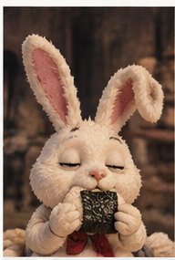
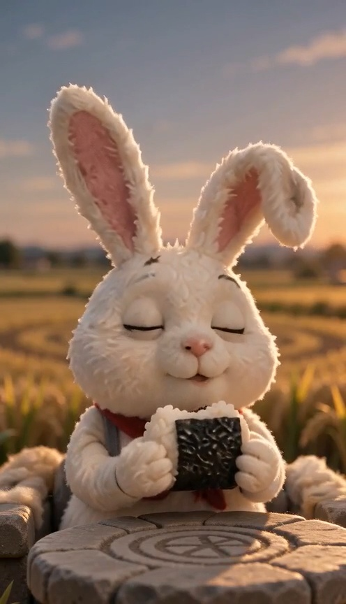
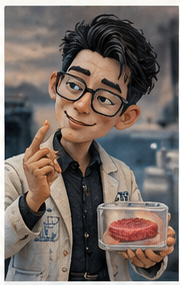
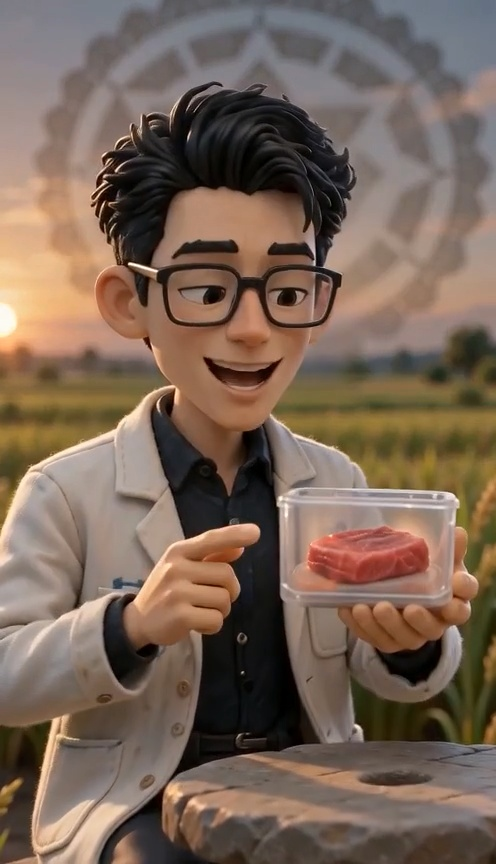
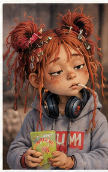

共有資料の一覧 ／ 確認ページ #435 卵劇場 EP02「食の未来 円卓会議」試作（fal・200円テスト）
#435 卵劇場 EP02「食の未来 円卓会議」試作（fal・200円テスト）
2026-09-06 実装・main合流・本番(GitHub Pages)反映まで実測確認
Google Driveの制作パック(EP02_食の未来_FAL200円テスト_PACK)を使い、fal AIだけで（ffmpeg不使用）3ショットの試作動画を完成させた。おむすびうさぎの実咀嚼・バイオイクオの口パクセリフ・神田グミの口パク＋咀嚼を、静止画からの新規動画生成（Seedance 2.0 mini reference-to-video）で実現。
② 数字
3本 完成したカット数
149.3円 実費合計（0.9556ドル）
13秒 3本合計の尺
③ 前と後（静止画→生成した動画のフレーム）
静止画（おむすびうさぎ 元の参照画像） 
生成した動画のフレーム（咀嚼で目・口・頬が動いている） 
静止画（バイオイクオ 元の参照画像） 
生成した動画のフレーム（口が開き話している） 
静止画（神田グミ 元の参照画像） 
生成した動画のフレーム（目を伏せ気だるく話している）
④ 完成した3クリップ（クリックで再生。自動再生・音量注意はしていません）
SH04 バイオイクオ「土、要ります？ これ、3Dで作ったマグロです。」
直接開く（別タブ）
⑤ 何をどう確かめたか
確認項目 結果 静止画にズーム/パンで誤魔化していないか 新規生成の動画3本(ffmpeg未使用) おむすびうさぎが実際に咀嚼しているか 目を閉じ頬・口が動く咀嚼を確認 声はキャラごとに違うか バイオイクオ=Casual_Guy／神田グミ=Sweet_Girl_2 実費は200円以内か 149.3円（0.9556ドル） 55〜70秒の目標尺を満たしているか 13秒のみ。予算内では13ショット全部は作れないと実測判明
正本：Google Drive『卵劇場｜共通素材庫/EP02_食の未来_FAL200円テスト_PACK/OUTPUT/』にcost_report.md・used_assets.md・production_notes.md・完成mp4を保存済み。55〜70秒のフル尺は予算200円と両立しないことが実測（480pで0.0721ドル/秒）で判明したため、今回は3ショットに絞って完成させた。詳細はproduction_notes.md参照。